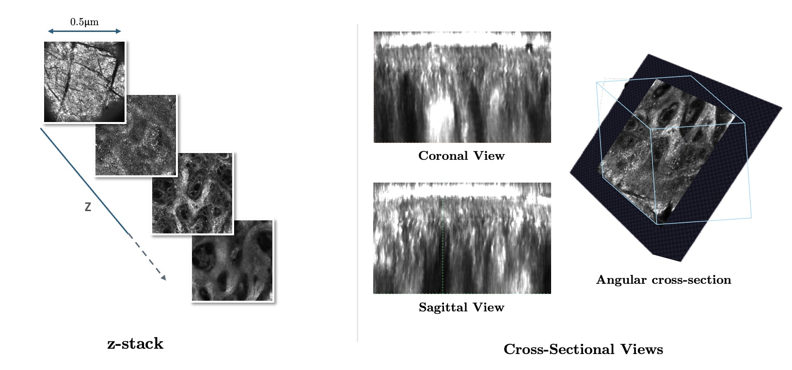
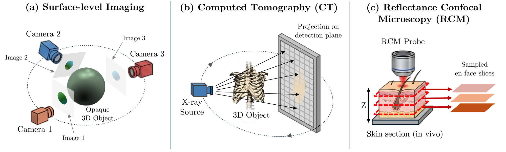
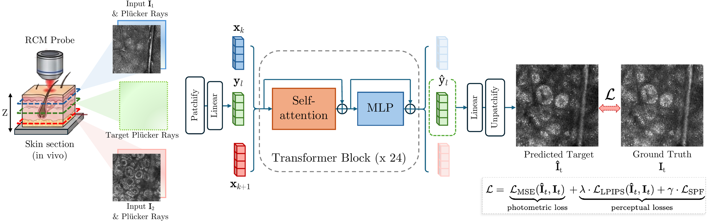
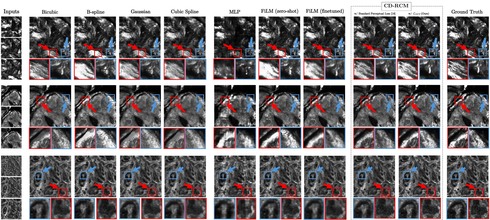
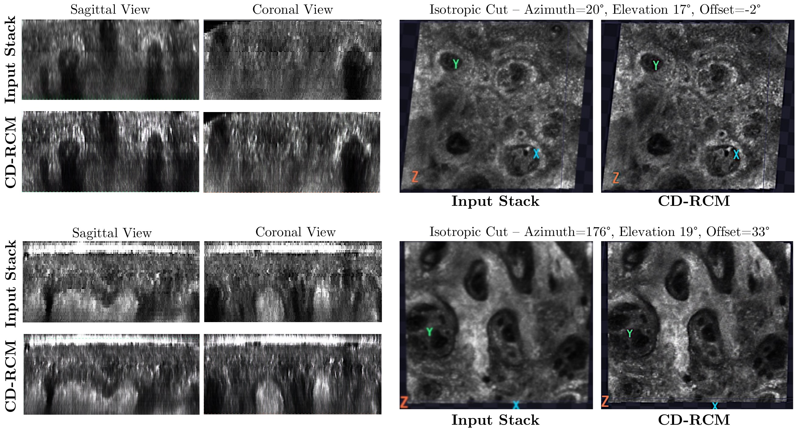

CD-RCM: Generalizable Continuous-Depth Novel View Synthesis for Reflectance Confocal Microscopy
NeurIPS 2026
1Northeastern University 2Memorial Sloan Kettering Cancer Center
*Equal contribution
- ~6×lateral vs. axial resolution gap (0.5 µm vs. ~3 µm) that CD-RCM fills in
- 0.8 sto densify a full stack 10× on a single NVIDIA A6000
- 1 passfeedforward inference, no per-stack optimization
- 22 / 25cases where a blinded RCM expert picked CD-RCM as closest to ground truth
Abstract
Reflectance confocal microscopy (RCM) provides noninvasive, cellular-resolution “optical biopsies” of human skin in vivo by acquiring en-face images at successive depths, forming a sparse z-stack. Due to optical limitations, these stacks are anisotropic 3D volumes with lateral resolution (0.5 µm) ~6 times higher compared to axial resolution, which is defined by the optical sectioning (3 µm), limiting the interpretation of tissue. Our goal is to provide continuous-depth visualization by interpolating intermediate sections and making the 3D volume isotropic. Such a representation permits arbitrary-direction sectioning, including histopathology-like cross-sectional examination, without requiring per-patient optimization.
To that end, we introduce the first RCM-specific novel-view synthesis (NVS) approach, CD-RCM, a feedforward model that predicts realistic, unseen depths from sparsely sampled RCM stacks. Classical neural rendering methods focus on reconstruction from surface-level multi-view observations. In contrast to surface-level camera views, RCM can acquire optically sectioned en-face images of tissue beyond the surface up to 200 µm. However, during visualization of the RCM stacks, observations of the shallower sections (towards the surface) obscure the deeper ones. This unique axial imaging geometry and layer-dependent anatomical organization motivated our development of a tailored architectural and training framework that explicitly accounts for RCM’s depth-resolved, occlusive imaging physics. Experiments demonstrate that CD-RCM achieves high-fidelity novel-view synthesis with sub-second inference time.
Why RCM needs its own view synthesis
RCM images living skin at cellular resolution by recording en-face sections at successive depths, typically 50–65 slices reaching 150–200 µm into the tissue. Each slice is sharp across (about 0.5 µm), but depth is sampled far more coarsely (about 3 µm optical sectioning), so cutting across the stack reveals blocky, staircase-like structure.
More importantly, clinicians are trained to identify anomalies and skin microstructures from histopathology images, which are vertically sectioned as illustrated on the right. These reveal tissue layer organization and depth structure directly in a single image that is oriented orthogonal to the skin surface. Instead, if they are given these RCM stacks on the left, the clinicians must mentally infer cross-sectional tissue structure from sparsely sampled depths.

For conventional surface-level imaging, neural rendering usually reconstructs opaque objects from cameras placed around them, relying on parallax between viewpoints. RCM works differently: a confocal pinhole selects one thin optical section at a time, and the microscope steps the focal plane down through the tissue. Every slice shares the same lateral field of view, and the only thing that changes between slices is depth.

How it works

A virtual camera that only moves in depth
RCM has no physical camera parameters, but its acquisition gives strong geometric priors, for consecutive slices are laterally aligned and differ only in axial position. We model each slice as a pinhole camera with fixed orientation translated along z, canonicalize each stack into a shared normalized coordinate system, and compute pixel-wise Plücker ray embeddings from these virtual cameras. This lets us reuse transformer architectures built for multi-view geometry.
Depth-queryable transformer
Input slices are patchified and concatenated with their ray embeddings into input tokens; each target depth contributes ray-only tokens. A 24-block decoder-only transformer with bidirectional attention processes both together, and only the updated target tokens are decoded back into pixels. Because target depths are just ray queries, CD-RCM can synthesize slices at any position between the acquired sections, including non-integer slice indices.
Skin-specific perceptual loss
Standard perceptual losses are tuned to natural-image semantics, not the speckle, cellular morphology, and layer-dependent contrast that dominate RCM. We adapt a DINOv3 ViT to the skin domain with LoRA, using self-distillation on a large auxiliary set of RCM mosaic crops, then freeze it and use its features as an additional training loss that encourages preservation of diagnostically relevant detail.
Training and inference
During training, we sample runs of nine consecutive slices, use the first, middle, and last as inputs, and supervise four randomly chosen intermediate slices. Randomizing which depths are supervised prevents overfitting to fixed spacing. At inference, CD-RCM takes any three evenly spaced slices and predicts arbitrary intermediate depths in a single forward pass.
Results
We evaluate on 216 in vivo RCM stacks of healthy skin (156 train, 60 test), each with 50–65 en-face sections acquired on a VivaScope 1500. We compare against four classical interpolation methods and two learned baselines: a per-stack NeRF-like coordinate MLP and FILM frame interpolation.
| Method | PSNR ↑ | SSIM ↑ | LPIPS ↓ | LSPF ↓ |
|---|---|---|---|---|
| Bilinear interpolation | 21.98 | 0.471 | 0.377 | 0.153 |
| B-spline interpolation | 22.02 | 0.471 | 0.375 | 0.161 |
| Cubic spline interpolation | 22.09 | 0.469 | 0.378 | 0.163 |
| Gaussian interpolation | 22.87 | 0.522 | 0.477 | 0.164 |
| MLP (NeRF) | 19.10 | 0.445 | 0.520 | 0.480 |
| FILM zero-shot (pretrained) | 20.24 | 0.380 | 0.440 | 0.156 |
| FILM fine-tuned (5 epochs) | 22.83 | 0.510 | 0.496 | 0.181 |
| CD-RCM (ours) | 23.36 | 0.581 | 0.314 | 0.145 |
Second-best results are underlined.
Gaussian interpolation and fine-tuned FILM raise PSNR by smoothing, but that blur erases the fine detail clinicians rely on and worsens perceptual metrics. The per-stack MLP fits the observed slices yet fails on unseen depths, showing that a cross-stack anatomical prior matters. CD-RCM is the only method that improves photometric and perceptual fidelity together.

Scroll sideways to see the full figure.
Isotropic 3D and arbitrary sectioning
Densifying stacks with CD-RCM so that axial sampling matches the lateral resolution turns them into isotropic volumes that can be cut in any direction. Sagittal, coronal, and oblique sections lose the staircase artifacts of the sparse input stacks and reveal continuous tissue morphology, which may help identify clinically relevant landmarks such as the dermal–epidermal junction.

Blinded expert evaluation
Pixel metrics don’t fully capture morphological fidelity, so an RCM expert with about 20 years of experience evaluated anonymized, randomized slices in two tasks. First, they rated individual slices from 1 to 3 for suitability for evaluating morphology, presence of implausible structures, and interpretation confidence. Second, they chose which of four reconstructions looked most like a withheld ground-truth slice, with inputs spaced 1.5× wider than during training.
| Method | Suitability ↑ | Implausibility ↓ | Confidence ↑ |
|---|---|---|---|
| Acquired (ground truth) | 2.40 (0.89) | 1.80 (0.84) | 2.40 (0.89) |
| B-spline | 2.60 (0.55) | 1.80 (0.84) | 2.80 (0.45) |
| Gaussian | 1.60 (0.55) | 2.00 (0.71) | 2.00 (0.71) |
| FILM fine-tuned | 1.80 (0.45) | 2.00 (0.71) | 2.00 (0.71) |
| CD-RCM (ours) | 2.40 (0.55) | 1.60 (0.55) | 2.60 (0.55) |
Image quality. Mean (SD) of ratings on a 1–3 scale, 5 slices per method.
| Method | Times chosen | Rate |
|---|---|---|
| B-spline | 3 | 12.0% |
| Gaussian | 0 | 0.0% |
| FILM fine-tuned | 0 | 0.0% |
| CD-RCM (ours) | 22 | 88.0% |
Similarity to ground truth across 25 cases.
CD-RCM slices were rated on par with acquired slices, while the smoothest methods, Gaussian interpolation and fine-tuned FILM, received the lowest suitability and confidence. CD-RCM achieved the lowest LPIPS on all 25 similarity cases, and the expert’s choices tracked perceptual similarity rather than pixel-wise error. With a single reader and a small sample, we treat these results as indicative rather than a formal non-inferiority test.
Ablation study
All variants include the MSE loss and are trained at 256 × 256 for 20k steps. Replacing the VGG-based perceptual loss with our skin-specific loss improves all four metrics, and the single final-layer formulation of LSPF outperforms a multi-layer variant.
| Training objective (all + LMSE) | PSNR ↑ | SSIM ↑ | LPIPS ↓ | LSPF ↓ |
|---|---|---|---|---|
| + LLPIPS | 21.60 | 0.480 | 0.343 | 0.273 |
| + VGG perceptual loss | 22.56 | 0.547 | 0.386 | 0.258 |
| + LLPIPS + VGG perceptual loss | 22.65 | 0.567 | 0.329 | 0.216 |
| + LLPIPS + LSPF (multi-feature) | 22.39 | 0.522 | 0.338 | 0.246 |
| + LLPIPS + LSPF (ours) | 23.35 | 0.597 | 0.288 | 0.172 |
Second-best results are underlined.
Acknowledgments
The reading study was conducted by Dr. Miguel Cordova, an RCM imaging expert with approximately 20 years of experience acquiring and interpreting reflectance confocal microscopy images at the Dermatology Service of Memorial Sloan Kettering Cancer Center (MSKCC). This work is supported by grants DoD/USAMRAA HT94252410553 and DoD/USAMRAA HT94252410554, NIH/NCI R01CA199673, NIH/NCI U24-CA264369, R01CA293974, and NIH/NCI Cancer Center Support Grant P30 CA008748.
BibTeX
@inproceedings{imtiaz2026cdrcm,
title = {CD-RCM: Generalizable Continuous-Depth Novel View Synthesis
for Reflectance Confocal Microscopy},
author = {Imtiaz, Tooba and Rajadhyaksha, Milind and Kose, Kivanc and Dy, Jennifer},
booktitle = {Advances in Neural Information Processing Systems (NeurIPS)},
year = {2026}
}